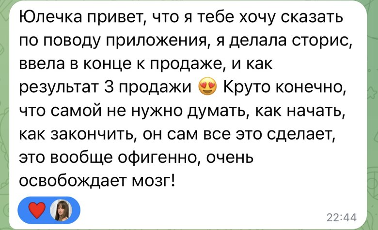
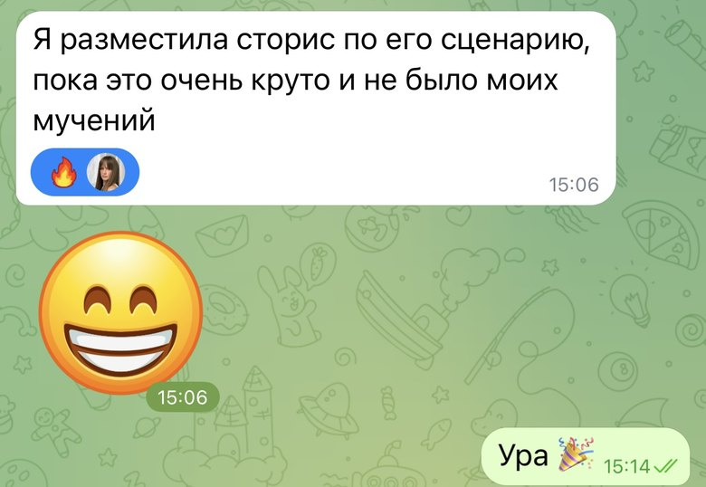
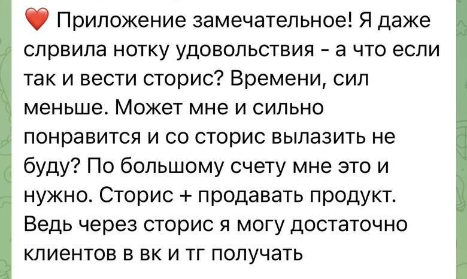
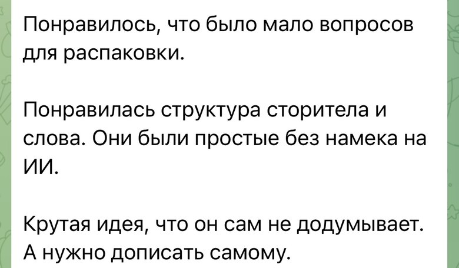
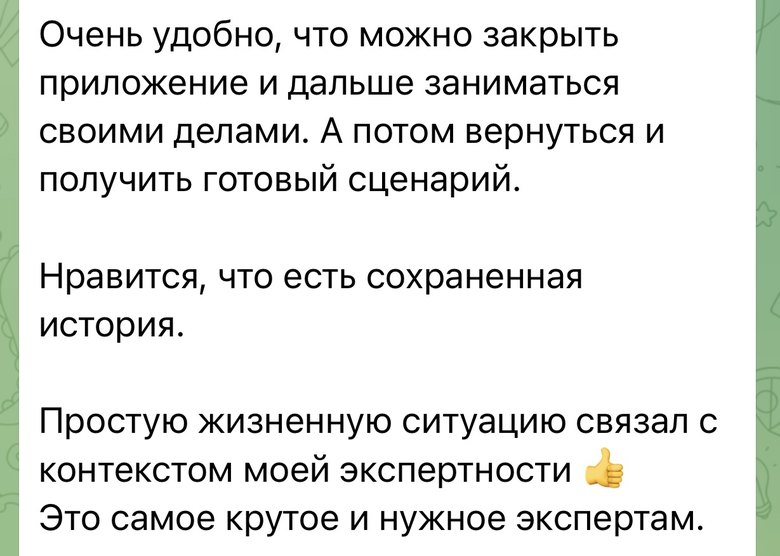
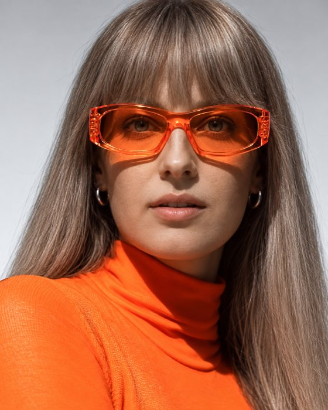
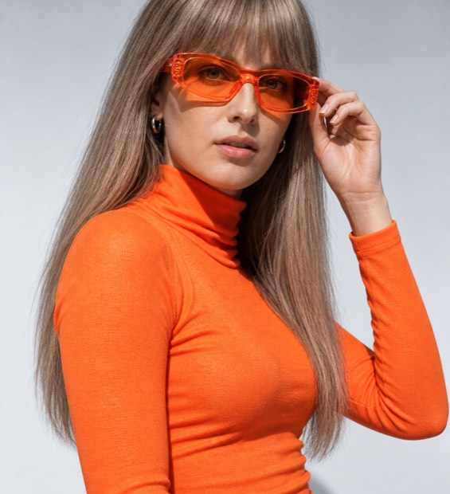

что я умею
1
РАСПАКОВКА ГОЛОСОМ
Задаю несколько вопросов, ты отвечаешь голосом — никаких анкет на миллион пунктов. Из ответов собираю карту твоего блога: темы, смыслы, аудиторию и манеру речи.
2
СЦЕНАРИИ СТОРИС НА КАЖДЫЙ ДЕНЬ
Пишу сторителлинги — личные, экспертные, продающие и вовлекающие. Про боли, желания и сомнения твоей аудитории, её языком.
3
РАЗБОР «КАШИ СМЫСЛОВ»
Наговори всё, что крутится в голове, а я разложу это по сторис. Двадцать мыслей вперемешку превращаются в понятные выходы.
4
ПРОГРЕВ ПОД ЗАПУСК
Собираю прогрев на 3, 7 или 14 дней по специальной структуре и пишу сценарии, которые превращают подписчика в клиента.
напиши свой первый сценарий
что говорят
те, кто уже пишут
сторис со мной
сторис со мной





листай вбок →
Следующий отзыв может быть твоим)
сколько это стоит
☕ 2,4 рубля за сценарий
по цене чашечки капучино
ПОДПИСКА
48 BYN
/ мес
без автосписаний — продлеваешь сама, когда захочешь
распаковка: карта твоего блога
20 сценариев в месяц
прогревы на 3, 7 и 14 дней
разбор «каши смыслов»: наговорил — получил сторис
кнопка откроет меня в Telegram, оплатить можно прямо там
БЕЗ ОПЛАТЫ
попробуй бесплатно
3 готовых сценария на пробу
Подписку оформлять не надо. Просто посмотри, какие сценарии у нас получаются, и реши сама.
попробовать бесплатно
*все расчёты производятся в белорусских рублях
а придумала меня
Юлия Липецкая

@JULIYA.LIPA
Я Юлия Липецкая, контент-маркетолог. Пять лет каждый день пишу сценарии сторис и прогревы для бизнесов и блогов в Instagram.
А ещё я занимаюсь нейросетями: сама собираю приложения и ботов, которые снимают с эксперта рутину. stories мастер и Клодик родились ровно на стыке этих двух вещей — методики и технологии.
За годы работы у меня собралась база: какие истории цепляют и как их рассказывать, чтобы человек сам дошёл до покупки. Эту методику я и загрузила в нейросеть.
Поэтому Клодик пишет не как ему вздумается, а по моей системе.
что меня обычно спрашивают
Тексты будут звучать «как нейросеть»?
Нет. Я пишу по твоей распаковке — твоими словами и историями, а каждый текст прогоняю через фильтр живой речи. Не понравилась фраза — попроси, перепишу.
У меня маленький блог — есть ли смысл?
Да. Методика построена на доверии, а не на охватах: ученицы Юлии получали заявки и со 100 подписчиками.
Не люблю голосовые — что делать?
Пиши текстом, я умею и так. Голос просто быстрее и живее.
Сколько времени это займёт?
Распаковка — 5–7 минут, один раз. Дальше каждый сценарий — пара минут.
Подходит для любой ниши?
Да. Методика держится не на нише, а на твоих историях и смыслах — поэтому одинаково работает и у эксперта, и у мастера, и у магазина. Среди отзывов выше — нумеролог, остеопат, тренер и дизайнер.
Что будет после трёх бесплатных сценариев?
Я предложу подписку: 48 рублей в месяц за 20 сценариев. Без автосписаний — продлеваешь сама, когда захочешь.

сомневаешься,
подойдёт ли тебе
подойдёт ли тебе
stories
мастер?
мастер?
Расскажи, чем занимаешься, — я посмотрю твой блог и честно скажу, подойдёт тебе приложение или нет. А если подойдёт, сразу напишу, с чего начать и какие сторис в твоей нише работают лучше всего.
написать Юле
Самозанятая Липецкая Юлия
УНП СА8580604
г. Витебск, Московский, 13-2
Республика Беларусь
juliuya23@gmail.com · @juliya.lipa
УНП СА8580604
г. Витебск, Московский, 13-2
Республика Беларусь
juliuya23@gmail.com · @juliya.lipa